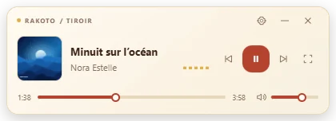

La musique reste avec toi
MP3, FLAC, WAV, AAC, Ogg… Tes fichiers locaux et tes playlists, à portée de clic.
LECTEUR AUDIO & VIDÉO · WINDOWS + ANDROID
Ta musique, tes films, tes moments. Réunis dans un lecteur gratuit pour Windows, aussi disponible sur Android. Le reste ? C’est toi qui choisis.
Windows 10 / 11 · Android en bêta · iOS à venir
01 — TON UNIVERS
Pas besoin de tout mettre dans le cloud. Retrouve ta bibliothèque, tes playlists et tes favoris. Lis tes fichiers audio et vidéo, même hors ligne.
02 — RESSENTIR
Dix bandes pour trouver ta couleur. Un peu plus de graves, un autre tempo, ou juste ton morceau préféré. L’égaliseur et les préréglages sont déjà dans le lecteur Windows.
« Brume des Hautes Terres » · création sonore originale, synthétisée ici. Aucun morceau téléchargé.
Visualiseur décoratif · active le son pour voir le signal réel
03 — VOIR PLUS GRAND
MKV multilingue, MP4 ou WebM : choisis ta piste audio, tes sous-titres et ton rythme. En plein écran, les commandes s’effacent après l’inactivité.
Nos paysages. Notre rythme.
04 — PRENDS LES COMMANDES
Ce que RAKOTO fait déjà, sans promesses en petits caractères.
MP3, FLAC, WAV, AAC, Ogg… Tes fichiers locaux et tes playlists, à portée de clic.
MKV, MP4, AVI, MOV, WebM… Le moteur mpv lit les formats compatibles sur Windows.
Sur Windows, des playlists pour la musique ; les vidéos restent dans une liste temporaire du dossier ouvert.
Avance, ralentis, change de piste audio ou de sous-titres. Les options suivent le média.
Thèmes clair et sombre et opacité du tiroir ajustable. Les animations décoratives Windows ont été retirées.
Un véritable mini-lecteur Windows au-dessus des autres fenêtres, avec pochette, volume et lecture.
RAKOTO / MINI
Travaille, écris, rêve un peu. Le tiroir flottant garde les commandes près de toi. Tu peux le déplacer, le réduire et revenir au grand lecteur.

05 — CHANGE D’ÉCRAN
Un bureau, une poche, et la suite qui se prépare. Chaque plateforme avance à son rythme.
 RAKOTOMusique
RAKOTOMusiqueTous les fichiers
RAKOTOiOSL’aventure continue.
Profite de ton expérience multimédia sur ordinateur avec RAKOTO Player.
Télécharger pour WindowsMusique, vidéos, coffre chiffré et réglages. Une application native avec LibVLC, déjà disponible en APK bêta.
Télécharger l’APK AndroidL’expérience RAKOTO Player arrive prochainement sur iPhone et iPad.
Aperçu de la vision iOS · aucune version publiée à ce jourWindows 10 et 11 · 64 bits (x64)
Android 6.0+ · appareils ARM
Environ 1 Go libre pendant l’installation Windows ; application installée d’environ 454 Mo.
MP3 · FLAC · WAV · AAC · Ogg · M4A · Opus
VIDÉOMKV · MP4 · AVI · MOV · WebM · MPEG · TS
La lecture dépend du codec du fichier, du moteur et de ton appareil. mpv sur Windows, LibVLC sur Android. La compatibilité iOS n’est pas encore annoncée.
06 — À TOI DE JOUER
Un lecteur multimédia gratuit. Tes fichiers, tes moments. Choisis ton installation, et fais comme chez toi.
Windows 2.3.0 · 10 / 11 x64
Tout le programme dans un fichier. Garde-le, installe-le sans Internet.
Un petit assistant télécharge le programme complet. Une connexion est nécessaire pendant le téléchargement.
Android 6.0+ · 1.0.0-beta.4
Si tu ne connais pas l’architecture de ton téléphone, garde la version universelle. Attends la fin du téléchargement avant d’ouvrir l’APK.
L’installation, simplement
Windows en développement · Android en bêta
L’assistant en ligne contrôle le SHA-256 avant installation. Les installateurs Windows ne sont pas signés par un certificat de code. Les APK Android sont signés avec la clé RAKOTO.
b6880a38825799a90a658d25bafc8e65e6361b12736d85b73ca320f005f0bf63Windows · online8d83284c5aa0cca30d4200ced5a4df7d187305c2328de23bee67d0effd4db28aAndroid068fccf50e21d219f7fa07337d7d5f803e144d0064a509658c04475ac78604ceSHA256SUMS.txtFAQ
Un lecteur audio et vidéo pour tes fichiers locaux, avec une bibliothèque, des playlists et des contrôles de lecture. Sur Windows, il propose aussi un mini-lecteur flottant. Une version Android est disponible en bêta.
Oui. Le téléchargement et la lecture des fichiers locaux sont gratuits, sans abonnement ni compte à créer.
Entre autres MKV, MP4, AVI, MOV, WebM, MPEG, MP3, FLAC, WAV, AAC et Ogg. Les pistes audio et sous-titres disponibles dépendent du fichier. La compatibilité dépend aussi des codecs et de l’appareil.
Oui, pour lire tes fichiers locaux. L’installateur hors ligne Windows contient les composants. L’assistant en ligne a besoin d’Internet pour les télécharger ; la lecture locale fonctionne ensuite hors connexion.
Sur Windows 10 ou 11 x64, télécharge puis ouvre l’installateur et suis les étapes. Sur Android 6.0 ou plus, télécharge l’APK officiel, autorise l’installation depuis cette source si nécessaire, puis accorde l’accès aux médias pour le scan.
Reviens sur cette page pour télécharger la version publiée. Ferme RAKOTO sur Windows avant l’installation. Sur Android, installe le nouvel APK signé par-dessus l’application existante. Ne la désinstalle pas : cela effacerait les données et le coffre privé.
Windows 10 et 11 en 64 bits (x64), et Android 6.0 ou plus sur appareils ARM. La version iPhone et iPad n’est pas encore publiée.
Oui, si tu cherches une autre présentation pour tes fichiers locaux, avec une bibliothèque et un tiroir flottant. RAKOTO utilise mpv sur Windows et LibVLC sur Android. Essaie-le avec tes propres fichiers pour voir s’il te convient.
Les vidéos .rpv et images .rpi sont chiffrées dans le stockage privé. Les originaux sont retirés après vérification et autorisation Android. Un retrait refusé reste à terminer. Restaure tes fichiers dans la galerie avant de désinstaller l’application.